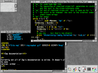
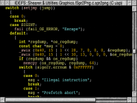
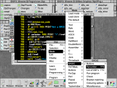
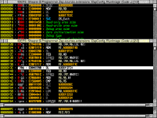
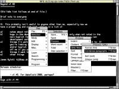

Everybody likes seeing screenshots, but also everybody hates making them. Here's a few which I've thrown together which show off some of Zap's features really badly. (The version of Zap in use was 1.44; the menus are based on those in test-3.)
|  | A couple of Zap windows, showing Perl and HTML colouring modes, all sitting within a fairly normal RISC OS desktop. Zap typically uses its own bitmap fonts for display purposes. |
 |
It's fairly easy to set up different options for different types of files. Colours, editing and display options can all be configured. |
|  | Syntax colouring for C source code. Lots of different languages have support, including C, C++, Java, ARM assembler and Acorn tokenised BASIC. This shot also shows Zap using RISC OS outline fonts instead of its own bitmap fonts. |
|  | Zap interacts normally with RISC OS, meaning that most of its functionality can be accessed via menus, dialogue boxes, and so on. However most of that power can also be accessed through keyboard commands. Menus and keyboard shortcuts are fully configurable. |
|  | Zap's ARM code mode shows a disassembled view of a raw binary. Two windows are shown here, giving two views onto the same file. Because the file is an AOF (ARM executable object) file containing compiled C code, Zap is able to display calls to subroutines, string access, and various details about the file header. |
|  | Zap provides a number of internal commands for processing text, and in addition can use external 'filter' programs to provide more functionality. On the leaf menu shown, 'sort', 'format' and 'Condense paragraphs' (which is actually a GNU sed script) are all external filters. |
{kind=link}
{kind=link}
{kind=link}
{kind=link}
{kind=link}